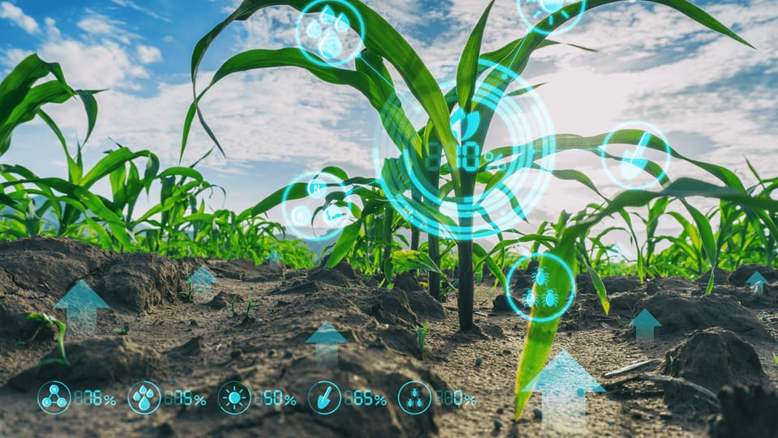

The land will not be suitable for farming, so there will be need of Hi-Tech Farming. Some of the technologies which will be in use by 2050 are as follows:
- Different types of Gadgets, Machines and software will be use to do Farming.
- People will do Vertical farming which will not soil, Hydroponic techonloy is used for watering plants, Artifical lighting will help in Photosynthesis.
- BoniRob machine will collect soil samples for testing.
- There will be gene-edited crops
- Agribotix, Marvex, Dupont and Syngenta all these companies are making differnt devices and doing research in this area.
Lets see how Farming will be in 2050, in this YouTube video: Farming in 2050
Back to Home Page